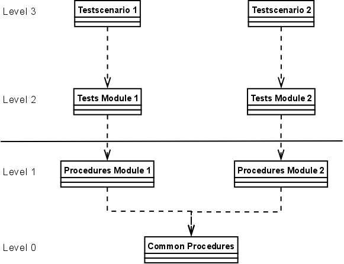
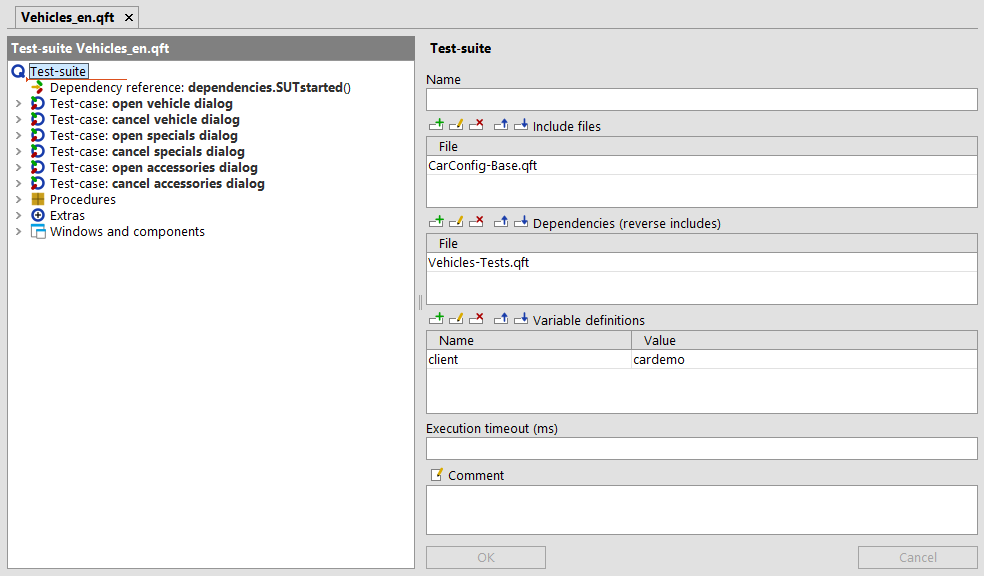
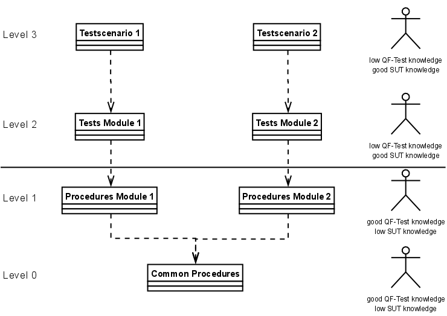

| Version 6.0.3 |
One of the most challenging tasks in a project is keeping the test-suites maintainable over a long period of time. Especially if some window or workflow changes significantly the maintenance effort should be kept to a minimum.
It is also worth thinking about how to minimize the creation efforts of tests that contain a lot of similar or even the same steps. A typical use-case is launching the SUT or the login process or a very important and basic workflow like navigating to a certain part of the SUT.
Another aspect to think about is how to efficiently organize test-suites if different people work in your testing project.
3.5+ In any case you should create your test-suites within a QF-Test project as described in chapter 9. This feature provides a better overview over your test-suites and directories.
The following sections show some best practices how to keep your tests maintainable, extensible and well-organized.
In chapter section 8.2 we describe the concepts of 'Test-set' and 'Test-case' nodes. A 'Test-case' node stands for one dedicated test-case and its test-data. A typical 'Test-case' could be derived from a use-case, a requirement or a defect description in your environment, e.g 'Calculate the price for vehicle xyz at 10% discount' for the JCarConfigurator application.
'Test-set' nodes are collections of 'Test-sets' and 'Test-cases' which can be used for organizing test-cases, e.g. 'Tests for calculating prices'.
'Test-step' nodes represent the individual test-steps of a 'Test-case' like 'Open window' or 'Check calculation'.
If you have an external description of the 'Test-case' or any other associated information which might be important for it, it is recommended to add an HTML link to it in the 'Comment' attribute of the 'Test-case'. You will see that link in the report later. It is even possible to create a separate test documentation using the menu action »File«-»Create testdoc documentation«. More details about documentation can be found in chapter 21.
3.1+The report and test documentation also contain the 'Test-step' nodes which are used in a 'Test-case'.
If a 'Test-case' consists of lots of 'Procedure calls' or 'Sequences', you should organize the single test-steps in 'Test-step' nodes. Those 'Test-step' nodes have the advantage that you can really see every significant step in the QF-Test window and also in the report later.
If you want to put several nodes into a 'Test-step' you can pack the respective nodes into a 'Test-step' via selecting them, perform a right-mouse click and selecting »Pack nodes«-»TestStep«.
One of the most important concepts for effective test automation is modularization. Modularization here means placing reusable sequences in a dedicated location and calling these whenever possible. This concept enables you to create a sequence only once and reuse it as often as you require it in your tests without re-recording the same steps all the time. Changes in the SUT that require an update of the tests that rely on such a sequence, e.g. a change to some basic workflow, can then be handled by updating just the procedure in a single location instead of many identical sequences spread all over the test-suites.
The modularization concept in QF-Test is implemented via 'Procedure' nodes. Procedures are well described in section 8.5.
If you have lots of test cases, it is best to have almost every test-step as a 'Procedure' and create those procedures up front, if possible. With those procedures in place you can fill your test-cases very fast by just adding the respective 'Procedure call' nodes.
In larger projects it is useful to have 'Procedures' at different level, e.g. component specific procedures like 'Click OK' and workflow oriented procedures like 'Create a vehicle'.
The concept of modularization enables you to maintain test-steps at a single location in your test-suites. But how to use different test data for different tests?
If you have a 'Procedure' that can be called with different test data, e.g. a typical 'Login' process with name and password or the 'Select accessory' procedure of the JCarConfigurator, you can use variables within the QF-Test nodes. Those variables should be used at places where test data is usually being accessed. In most cases variables will be used for 'Text input' nodes or for selections of items in a list or a table or tree nodes.
If a procedure requires variables you should define the required variables in its list of 'Variable definitions'. This is to ensure that you get a list of all required parameters whenever you add a respective 'Procedure call' node for that 'Procedure' to your tests. Some customers even set dummy default values for parameters so they can recognize immediately when a parameter has not been initialized by the calling test.
The next step is to move those variables from the 'Procedure call' either into the 'Variable definitions' section of the 'Test-case' node or to put the test data into a 'Data driver' node with a 'Data table' or using an external data source.
The usage of variables and parameters is well described in section 8.5. Parameters can also be created automatically, please see subsection 8.5.4. You can find more details about the data driver concept for loading test data from a data source in chapter 20.
Up to now you have read about using the modularization and parameterization concept to avoid unnecessary and redundant work in the creation process of your tests. You should have recognized that those concepts will reduce the maintenance efforts of your test-suites by changing or updating only one single sequence instead of several ones. But we still do not know how to organize our work for different test engineers or for a very large project with a lot of GUI elements.
The answer for an effective working organization comes again from the software development area and it is to use several 'libraries' for different areas and different responsibilities.
Importing other test-suites into a test-suite enables you to follow that encapsulation approach. A typical organization of test-suites in your project could look like this:
|
|  | ||
|
| Figure 33.1: Structure of multiple test-suites | ||
Level 0 is the level that contains test-steps (i.e. 'Procedures') which are required for nearly all test-cases in your projects. Such test-steps could be 'Launch SUT' or 'Perform the login'.
Level 1 contains test-steps for a specific part of the SUT. For the JCarConfigurator you can think about a test-suite 'Vehicles' containing 'Procedures' like 'Create a vehicle', 'Remove a vehicle' and another test-suite 'Accessories', which contains 'Procedures' like 'Create an accessory' or 'Remove an accessory'.
Level 2 is the test-case level. It contains 'Test-cases' and 'Test-sets' for the respective area of your software, e.g. 'Tests for vehicle creation' or 'Tests for accessory creation'. Of course you could also have a test-suite like 'Integration tests' which refers to test-steps from different test-suites at level 1 and level 0.
Level 3 is the so called scenario level. Those test-suites usually just contain 'Test calls' to level 2 and stand for different scenarios within your test project, e.g. 'Nightly test scenario', 'Defect verification scenario' or 'Quick-test build verification'.
Note The structure described in this document is of course just one possible solution for handling test-suites in a project and is not a strict rule you have to follow. You could also think about splitting level 1 into a GUI-element level and a workflow level or merge level 2 and level 3 to one level. Which structure you finally implement also depends on the experience and knowledge of the test-engineers working in your project.
The including area of level 1 test-suites looks like this:
|
|  | ||
|
| Figure 33.2: Including test-suites of level 1 | ||
You can find a detailed description of how to include test-suites in section 23.1 and section 45.6.
In section 34.5 you can find a step-by-step description how to extend an already existing test-suite and in section 34.4 you can find strategies of handling components in such a scenario.
If you take a closer look at the organization shown in the previous section section 33.4 you may recognize that it is also possible to organize your test-suites based on different knowledge levels of test engineers.
|
|  | ||
|
| Figure 33.3: Structure of different test-suites with roles | ||
Level 0 and level 1 require a good knowledge in working with QF-Test but not a deep knowledge of the SUT. On the other hand level 2 and level 3 require a very good knowledge of the SUT and the planned test-cases but those engineers usually do not require a very deep knowledge of QF-Test as long as they just use procedures from level 0 and level 1.
Test engineers working in level 0 and level 1 should be capable of implementing scripts or control structures like the 'Try'/'Catch' concept which enables them to create strong and powerful test libraries. At least the engineers working on level 0, but also recommended for engineers working on level 1, should have a good knowledge about component recognition in QF-Test. Please see chapter 5, section 5.9 and section 5.3.
Note Even if you are working alone on a project it is strongly recommended to split the tests and procedures into different levels because maintenance will become easier than with everything kept in one huge test-suite.
If you follow the approach suggested in the previous section (section 33.4) you have to define where the components belong. There are two possibilities:
Storing all components in level 0 is the most simple solution but this could cause you to update level 0 very often, just because one single component in your project changes. You have to assign responsible persons to keep that structure cleanly.
In big projects you may consider storing the common components like the login dialog or the main frame menus, that are important for everyone, in level 0. Components specific to a certain area, e.g. a dedicated vehicle dialog, appear only in the test-suite that holds the procedures operating on those components.
The workflow for moving components between test-suites is described in section 34.4 and the workflow for extending existing test-suites is described in section 34.5.
3.5+ You don't need to care about 'Dependencies' of test-suites belonging to a QF-Test project as described in chapter 9, because QF-Test automatically resolves dependent suites. So, if you use the concept of projects, you can skip this chapter.
If you work in different test-suites in your project you might sometimes want to rename a 'Procedure' or a 'Test-case'. If you do that you may encounter some troubles in updating the references to that 'Procedure' or 'Test-case' in other test-suites. If you want to keep the other files also being updated after renaming such an element you have to maintain the 'Dependencies' attribute of the root node of the library test-suite.
If you follow the approach described in section section 33.4, you should ensure that level 0 contains a reverse include to level 1, level 1 should contain one to level 2 and level 2 should contain another one to level 3. A sample from the provided demo test-suites is shown in figure 33.2.
| Last update: 9/6/2022 Copyright © 1999-2022 Quality First Software GmbH |